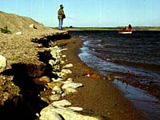

 The sport of fishing has changed over the years. Due to increased fishing pressure and improved fishing technologies, fish quality and quantity have declined in many waters. In Saskatchewan, large, spawning fish play a key role in sustaining the fish resource. Lakes with healthy spawning habitat can usually produce enough young fish to sustain populations. If spawning stocks are reduced by heavy angling, there will be fewer eggs laid during the spawning period, and fewer fish will be able to grow into breeding fish. It is critical to protect the spawning fish. Using upper size limits is one way to achieve this. In Saskatchewan, anglers may retain on fish over the upper size limit for walleye, northern pike, lake trout, and arctic grayling. These species need extra protection of the upper size limit due to their popularity with anglers or limited distribution in the province. There are several ways in which anglers can help to decrease the harm to this resource and to maintain the quality of fish in the waters of Saskatchewan. Catch and release fishing is just one of these methods.
How to Catch and Release Fish:
To harm as few fish as possible, using lures alone (instead of with bait) allow for a higher survival rate. Baited hooks are more likely to be swallowed, making them difficult to remove. Single and barbless hooks are much easier to remove, thus increasing the chance for survival for the released fish.
|